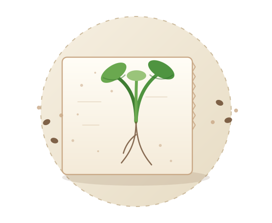

Chapter two
Reduce. Segregate. Reuse. Recycle. Review.
Five objectives, each one small enough to start on Monday and concrete enough to measure. Together they take paper and plastic out of the campus waste bin and put them back to work.

Five objectives, each one small enough to start on Monday and concrete enough to measure. Together they take paper and plastic out of the campus waste bin and put them back to work.
01
Reduce
Fewer single-use items, less unnecessary paper.
02
Segregate
Paper, clean plastic and wet waste kept apart.
03
Reuse
Seed paper, plant pots and trays.
04
Recycle
Suitable material sent to the right channel.
05
Review
Check what the bins hold and correct the plan.
An objective only matters if it can be handed to a student, a classroom or the housekeeping team. Click any row to open it.
Cut avoidable single-use items before they ever reach a bin. Reduce unnecessary paper use — print only what is needed, and reuse the backs of sheets.
Unit I · Natural Resources — use materials efficiently and reduce demand for virgin resources.
Three clearly labelled bins at canteens, classrooms, offices and the collection point. Keep paper and plastic clean and dry so contamination does not ruin the load.
Unit II · Ecosystems and Unit IV · Environmental Pollution — prevent litter, reduce pollution and open dumping.
Seed paper from clean recycled pulp, using locally suitable, non-invasive seeds with guidance. Plant pots and trays from clean, suitable waste plastic — cut, not melted, and only under supervision.
Unit III · Biodiversity — cleaner surroundings help protect habitats and living organisms.
Coordinate with authorised recyclers rather than relying on informal buyers. Set collection times, use covered containers and keep storage areas tidy.
Unit I · Natural Resources and Unit IV · Environmental Pollution.
Awareness posters at the bins so the labels explain themselves. Student volunteers and periodic waste checks; review the results each term and adjust bin placement, signage and collection.
Unit V · Social Issues & Sustainability — build participation, responsible consumption and community action.
Pick up an item and drag it into the bin it belongs in — or tap the item and then the bin. This is the whole segregation idea reduced to three seconds of thought.
Choose a labelled bin
Both ideas stay inside the rules we set ourselves: clean recovered material, suitable methods, and no melting or burning of plastic on campus.


Unit I to Unit V — natural resources, ecosystems, biodiversity, pollution and social issues — each one answered by a campus-level action.